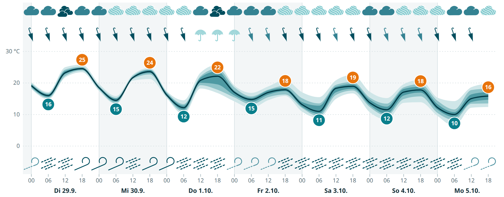
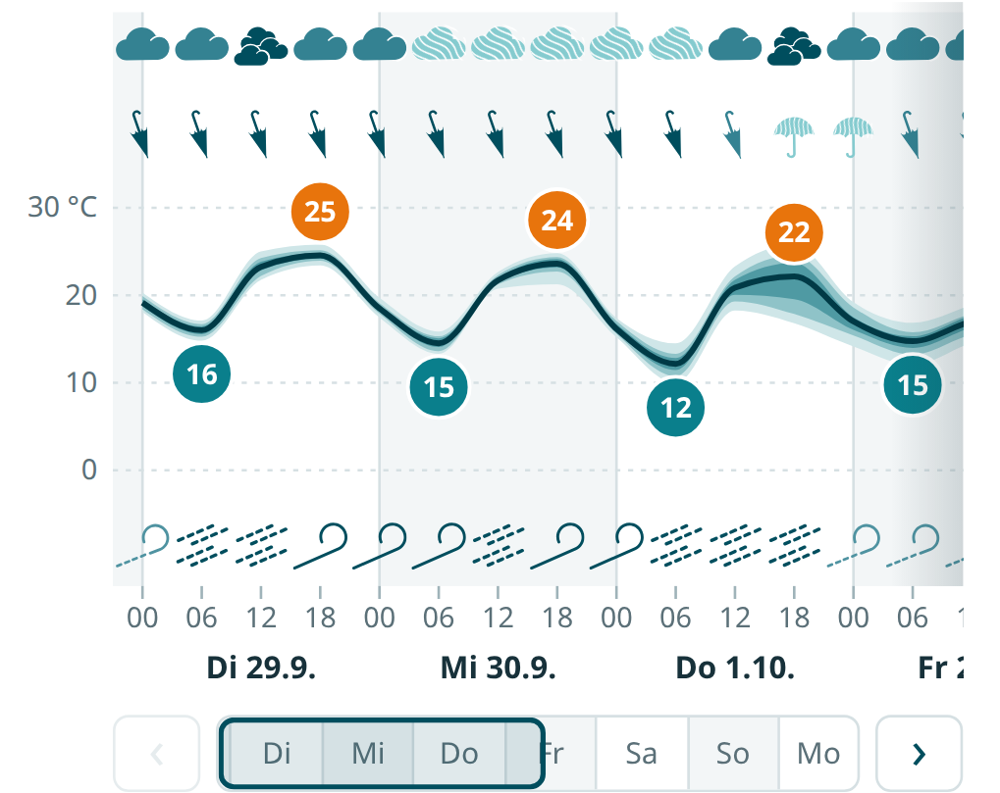
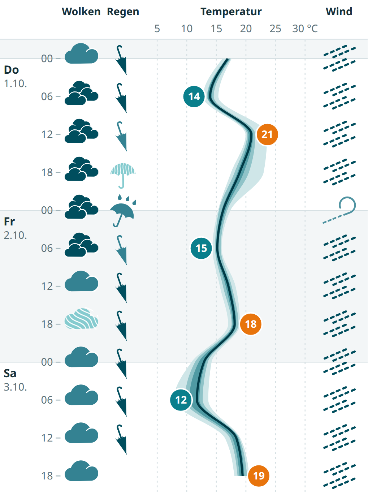
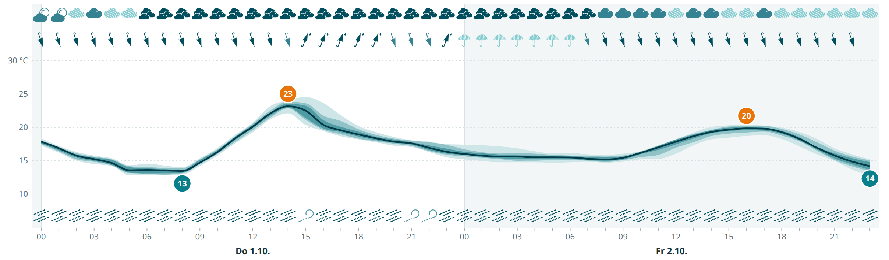
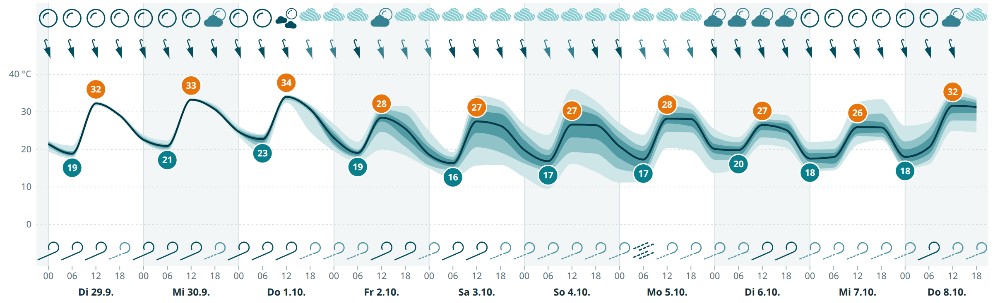
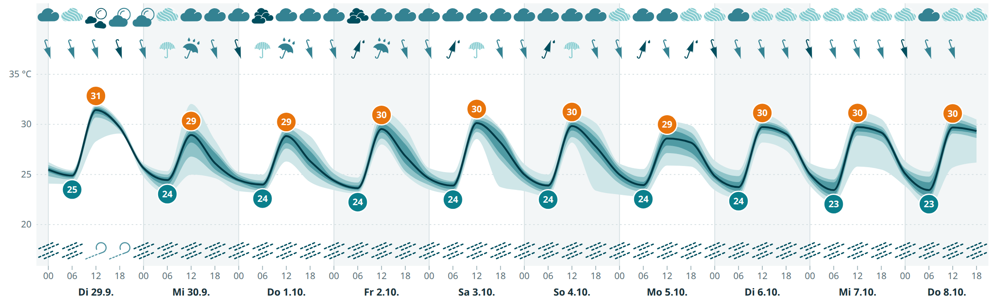
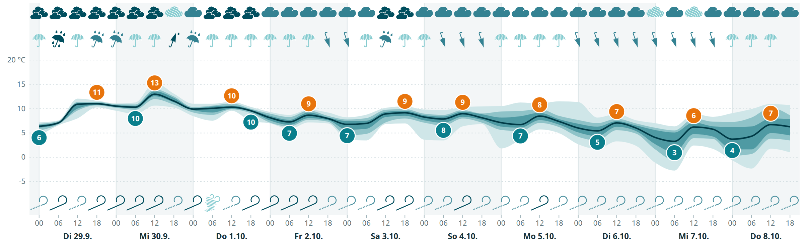
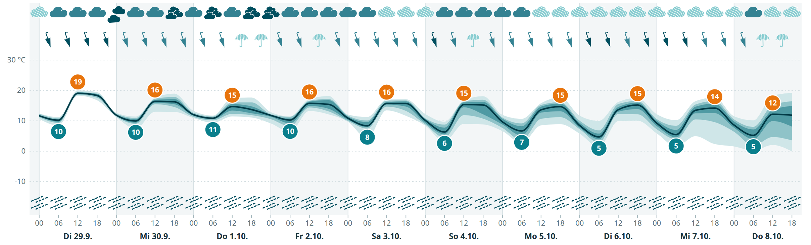

Dieser Bericht erklärt die Grundidee der Software: Statt eine einzige Wetterprognose zu zeichnen, zeigt das Meteogramm, wie stark sich 51 gleichwertige Modellläufe des ECMWF-Ensembles einig sind. Je größer die Uneinigkeit, desto unspezifischer wird das Symbol, das der Leser sieht. An konstruierten Einzelfällen und an echten Vorhersagen für fünf Klimazonen wird gezeigt, wie das funktioniert – in der 2026 neu entwickelten Web-App.
Grundlage: Quellcode im Repository ProbabilisticWeatherForecast (Branch main,
Commit 2915cfb), hervorgegangen aus dem ECMWF „European Summer of Weather Code“ 2018 und 2026 als Web-App
neu entwickelt. Die Meteogramme sind Bildschirmfotos der neuen App, gespeist aus den Test-Fixtures (ECMWF-IFS-Ensemble
über Open-Meteo, aufgezeichnet am 29.09.2026); die Piktogramme der Beispiele in Abschnitt 6 hat der Klassifikator der
App bestimmt. Abschnitt 10.1 beruht auf einem Live-Abruf vom 29.09.2026. Stand: 01.10.2026. Die frühere Fassung dieses
Berichts (28.09.2026) beschrieb die alte Flask-/matplotlib-Anwendung, die heute auf dem Branch old-webapp liegt.
Die klassische Wetter-App zeigt für jede Stunde einen Wert: 17 °C, Sonne, 0 mm Regen. Diese Werte stammen aus einem einzelnen Modelllauf und wirken für morgen genauso verbindlich wie für übermorgen in einer Woche. Tatsächlich ist die Atmosphäre ein chaotisches System: winzige Unterschiede im Anfangszustand wachsen im Lauf der Tage zu völlig verschiedenen Wetterlagen an.
Wetterdienste begegnen dem mit Ensemble-Vorhersagen. Das Europäische Zentrum für mittelfristige Wettervorhersage (ECMWF) rechnet sein Modell IFS nicht einmal, sondern 51-mal – mit leicht gestörten Anfangsbedingungen und Modellphysik. Liegen die 51 „Member“ nah beieinander, ist die Lage gut vorhersagbar; laufen sie auseinander, ist sie es nicht. Die Streuung des Ensembles ist damit ein direktes Maß für die Unsicherheit.
Die Schwierigkeit liegt in der Darstellung. 51 Temperaturkurven übereinander sind unlesbar, und ein Wettersymbol „Regen“ kann man nicht einfach zu 40 % zeichnen. Diese Software löst das mit zwei Mitteln: Perzentil-Bändern für die Temperatur und einer Value-Suppressing Uncertainty Palette (VSUP) für Wolken, Niederschlag und Wind.
Der Adapter sources/open_meteo.py lädt von der Open-Meteo-Ensemble-API die stündlichen Werte aller
Member eines Ensembles. Standard ist das ECMWF-Modell ecmwf_ifs025 mit 51 Membern (0,25°-Gitter, rund 25 km;
der Lauf reicht knapp 15 Tage); weitere Modelle stehen zur Wahl (Abschnitt 3). Geladen werden vier Größen: 2-m-Temperatur, Niederschlag, Gesamtbewölkung und 10-m-Windgeschwindigkeit. Er fordert Temperatur,
Niederschlag und Wind ausdrücklich in °C, mm und m/s an und liest trotzdem bei jeder Größe die Einheit, die Open-Meteo
zurückmeldet: Bekannte Einheiten werden umgerechnet, unbekannte abgelehnt – eine Zahl in der falschen Einheit wird nie
stillschweigend weiterverrechnet (warum, zeigt Abschnitt 10.2). Für jeden
Zeitschritt – sechs Stunden, bei den stündlich rechnenden Regionalmodellen auch eine – wird die Verteilung der
Member-Werte auf neun Quantile reduziert (core/reduce.py):
| Quantile | Bedeutung | Wofür die App sie braucht |
|---|---|---|
p0, p100 | kleinster bzw. größter Wert aller 51 Member | äußeres Temperaturband |
p10, p90 | 80 % der Member liegen dazwischen | mittleres Temperaturband, Tooltip |
p17, p83 | die mittleren zwei Drittel (rund 34 von 51 Membern) | Stufe 3 „sicher“ |
p25, p75 | die mittlere Hälfte der Member | inneres Temperaturband, Stufe 2 „wahrscheinlich“ |
p50 | der Median – die typische Einzelprognose | Temperaturlinie, Tageswerte, Tooltip |
Temperatur, Bewölkung und Wind sind Momentanwerte zum Zeitpunkt des Schritts. Niederschlag ist dagegen eine Summe: Für jeden Member werden zuerst die stündlichen Mengen zu 6-Stunden-Summen addiert, erst danach werden die Quantile gebildet. Die Reihenfolge ist wichtig – das 90. Perzentil der 6-Stunden-Summen ist nicht die Summe der stündlichen 90. Perzentile, weil nicht derselbe Member in jeder Stunde der nasseste ist. Der Schritt um t Uhr umfasst die sechs Stunden ab t; weil Open-Meteo jeder Stunde die Menge der vorangegangenen Stunde zuschreibt, sind das die Werte von t+1 bis t+6 Uhr. Der alte Code lag hier eine Stunde zu früh.
Das Ergebnis ist ein Forecast (core/model.py), dessen Prüfungen der Vertrag der ganzen
Anwendung sind: Ein Forecast, der existiert, hat feste Einheiten, gleichmäßige Schritte in UTC und
geordnete, endliche Quantile. Das Backend liefert ihn als JSON unter /api/forecast aus, zusammen mit dem
Piktogramm, das die VSUP-Regeln für jeden Schritt gewählt haben. Der Browser zeichnet daraus das Meteogramm. Er kennt
die 51 Einzelläufe also nie, sondern nur diese neun Zahlen pro Schritt – alle Darstellungsentscheidungen bauen darauf auf.
Das Meteogramm wird im Browser als SVG gezeichnet (React, d3) und besteht aus vier übereinanderliegenden Streifen mit gemeinsamer Zeitachse, ein Symbol bzw. Stützpunkt pro 6-Stunden-Schritt:
Die Zeitachse zeigt die Ortszeit des Vorhersageorts, nicht die des Browsers, einschließlich Sommerzeit; jeder zweite Tag ist grau hinterlegt. Die Ansicht beginnt beim Schritt, der jetzt am nächsten liegt; ein Schieberegler wählt, wie viele Tage zu sehen sind, ein angebrochener letzter Tag eingeschlossen. Für schmale Bildschirme gibt es zwei Darstellungen zur Wahl. Waagerecht bleibt alles in einer Zeile: Würde ein Schritt schmaler als 23 Pixel, scrollt die Zeile seitlich, per Wischgeste oder über eine Tageskarte darunter, die mit einem Rahmen anzeigt, welcher Teil gerade zu sehen ist. Senkrecht läuft die Zeit nach unten, und die vier Größen stehen als Spalten nebeneinander. Beim Überfahren mit der Maus nennt ein Tooltip für den Schritt Median und 10.–90.-Perzentil jeder Größe samt Klasse und Stufe des Symbols. Unter dem Meteogramm steht die Legende aus Abb. 1.
Ein Auswahlfeld wählt das Modell. Zur Wahl stehen ECMWF, das globale ICON-Ensemble des DWD (40 Member, 26 km, gut 7 Tage) und, wo sie den Ort abdecken, drei feinere Regionalmodelle: ICON-EU (13 km, 5 Tage), ICON-D2 (2 km, 2 Tage) für Mitteleuropa und ICON-CH2 von MeteoSwiss (2 km, 5 Tage) für den Alpenraum. Dazu kommen, nur von Hand wählbar, vier weitere globale Ensembles: das KI-Modell AIFS des ECMWF (51 Member, 15 Tage), GFS und das KI-Modell AI-GEFS der NOAA (je 31 Member, 16 Tage) und GEM aus Kanada (21 Member, 16 Tage). Sie unterscheiden sich deutlich – über sechs Tage in Reykjavík lagen die mittleren Regensummen zwischen 36 mm (GFS) und 63 mm (GEM), ECMWF bei 46 mm. Angeboten werden nur Modelle, die den Ort abdecken, und jedes mit mindestens zehn Membern; bei weniger sagte „zwei Drittel sind sich einig“ nichts mehr.
Der Standard ist „Automatisch“: Die App nimmt das Modell mit dem feinsten Gitter, das den Ort abdeckt und die gewählten Tage schafft. In Braunschweig ist das für ein bis zwei Tage ICON-D2, bis fünf Tage ICON-EU, darüber ECMWF; in Singapur immer ECMWF. Die vier zusätzlichen globalen Modelle wählt die Automatik nie: drei reichen 16 Tage, einen mehr als ECMWF, und würden sonst lange Zeiträume übernehmen. Unter dem Meteogramm steht dann „automatisch gewählt“, und wer die Tage verschiebt, kann damit das Modell wechseln – die App lädt nur dann neu und zeigt bis dahin das alte Bild abgeblendet weiter.
ICON-D2 und ICON-CH2 rechnen über ihren ganzen Lauf jede Stunde und lassen sich stündlich zeichnen (ICON-D2 standardmäßig), umschaltbar mit „stündlich | 6 h“. Der Regen hat dann eigene Grenzen von 0,1 / 1 / 3 mm pro Stunde. Die übrigen Modelle bleiben bei sechs Stunden: ECMWF rechnet nur alle drei Stunden, ICON-EU und das globale ICON nur in den ersten zwei Tagen stündlich; danach liefert Open-Meteo gleichmäßig verteilte 3-Stunden-Summen. Ort, Modell, Tageszahl, Schrittweite und Darstellung stehen in der Adresse, jede Ansicht ist also ein Link.




Für eine stetige Größe wie die Temperatur ist ein Band die natürliche Darstellung. Drei ineinanderliegende Flächen zeigen Minimum–Maximum, 10.–90. und 25.–75. Perzentil; darüber liegt dunkel der Median. Je dunkler eine Stelle, desto mehr Member liegen dort. Ein schmaler, fast dunkler Strich heißt „alle Läufe sagen dasselbe“; ein breiter, heller Fächer heißt „die Temperatur kann um mehrere Grad abweichen“.
Die Tagesextremwerte in den Kreisen beziehen sich immer auf den Median. Sie sind bewusst als einzelne, gut lesbare Zahl gehalten, werden aber stets im Kontext des Bandes gezeigt: Eine „12“ in einem breiten Fächer ist erkennbar weniger verlässlich als eine „12“ auf einer schmalen Linie. Die Temperaturachse gilt für den ganzen gewählten Zeitraum, auch für den Teil, der gerade aus dem Bild gescrollt ist, damit fünf Grad überall gleich hoch aussehen.
Für Wolken, Regen und Wind funktioniert ein Band nicht gut – der Leser will wissen: Brauche ich einen Schirm? Dafür braucht es Symbole. Ein Symbol kodiert aber normalerweise nur einen Wert. Die Value-Suppressing Uncertainty Palette (nach Correll, Moritz & Heer, CHI 2018) kodiert Wert und Unsicherheit gleichzeitig, und zwar mit einer bewussten Asymmetrie:
Je unsicherer die Vorhersage, desto weniger Wertklassen darf der Leser unterscheiden. Bei hoher Sicherheit gibt es vier verschiedene Symbole (z. B. kein / leichter / mäßiger / starker Regen), bei mittlerer Sicherheit nur noch zwei („kein oder leichter“ / „mäßiger oder starker Regen“), bei geringer Sicherheit genau eines („alles möglich“). Die Unsicherheit unterdrückt also die Wertinformation, statt sie nur mit einem Fragezeichen zu versehen.
Dieses Prinzip verhindert einen typischen Fehler: Wer ein Regensymbol mit „30 %“ daneben sieht, liest trotzdem zuerst „Regen“. Bei VSUP gibt es in der unsicheren Situation gar kein spezifisches Regensymbol, das man überlesen könnte. Zusätzlich trägt die Farbe die Sicherheit: Sichere Symbole sind satt dunkel-petrol (Stufe 3), wahrscheinliche mittel-petrol (Stufe 2), das unsichere Symbol hellblau und schraffiert (Stufe 1). Schon aus der Entfernung sieht man, welche Tage belastbar sind.
In Abb. 1 entspricht das den drei Zeilen jeder Spalte: vier Felder für Stufe 3, zwei für Stufe 2, eines für Stufe 1. Jede der drei Größen hat damit genau 4 + 2 + 1 = 7 Piktogramme. Die Neuentwicklung zeichnet sie als Vektorgrafiken (SVG); die alten PNG-Symbole, deren Regenschirme einen weißen, nicht transparenten Hintergrund hatten, benutzt sie nicht mehr.
Welches der sieben Symbole gezeichnet wird, steht nicht mehr im Programmcode, sondern in der Konfigurationsdatei
config/vsup.yaml. Für die Bewölkung lautet der Eintrag:
$yaml
Jede Größe hat vier Wertklassen mit festen Grenzen (Bewölkung 10 / 50 / 90 %, Niederschlag 0,1 / 2 / 5 mm in 6 Stunden – bei stündlichen Schritten 0,1 / 1 / 3 mm pro Stunde, Wind 3 / 10 / 17,2 m/s). Die Stufen werden von oben nach unten geprüft; die erste, die zutrifft, gewinnt:
Die Schwelle „zwei Drittel“ wurde am 29.09.2026 an Live-Daten der fünf Beispielorte festgelegt. Mit 80 % (10.–90. Perzentil, wie im alten Code) waren fast nur die Randklassen je „sicher“ – bei Wolken 9 %, bei Regen 18 % der Schritte; 50 % war als Aussage „sicher“ zu schwach. Mit zwei Dritteln sind es 13 % bzw. 26 %, beim Wind 60 %.
Die Regengrenzen 2 und 5 mm gelten seit dem 01.10.2026; vorher waren es 1 und 2 mm, übernommen aus dem Code von 2018 ohne erkennbare Begründung. 2 mm in sechs Stunden sind im Mittel 0,33 mm pro Stunde – nach der üblichen Einteilung (leicht bis 2,5 mm pro Stunde) leichter Regen und kein starker. 0,1 mm als Grenze zu „kein Regen“ ist die übliche Messschwelle von Regenmessern.
Die Datei wird beim Start vollständig geprüft; jedes Problem wird mit Zeilennummer gemeldet, und eine fehlerhafte
Konfiguration verhindert den Start, statt falsche Symbole zu liefern. Jedes Schema nennt seine Einheit; Schwellen in
einer anderen Einheit werden beim Laden einmal umgerechnet. Die alten Regeln – eine Prüfkette mit 10./90. Perzentil,
Median und Sonderfällen wie „75. Perzentil < 1,5 mm“ – gibt es weiterhin, als eingefrorene
*-legacy-Schemata. Tests prüfen sie Schritt für Schritt gegen den Originalcode; die App zeichnet sie
nicht mehr.
Die folgenden Beispiele sind konstruierte Einzelschritte; das Piktogramm hat jeweils der Klassifikator der App mit der ausgelieferten Konfiguration bestimmt. Die dünne Linie reicht von Minimum bis Maximum, der helle Balken zeigt die mittleren zwei Drittel (p17–p83, entscheidet über Stufe 3), der dunkle die mittlere Hälfte (p25–p75, Stufe 2), der Strich den Median. Gestrichelte Linien markieren die Klassengrenzen.
Die Test-Suite des Projekts enthält echte Ensemble-Vorhersagen für fünf bewusst unterschiedliche Orte, aufgezeichnet am 29.09.2026, je 59 Schritte. Sie zeigen, dass Unsicherheit nicht nur von der Vorhersagezeit abhängt, sondern stark von Ort, Wetterlage und Größe. Die Tabelle zählt, wie oft jede Stufe vorkommt; Braunschweig (gemäßigt, Abb. 2) wurde bereits gezeigt, die übrigen Meteogramme zeigen je zehn Tage.




Fasst man die Breite des Temperaturbands (10.–90. Perzentil) für alle fünf Orte zusammen, wird sichtbar, was die Meteogramme einzeln andeuten: Die Vorhersagbarkeit nimmt zwar überall mit der Zeit ab, aber nicht gleich schnell und nicht gleichmäßig.
Genau diese Information geht bei einer einzelnen Prognoselinie verloren. Eine Aussage „Freitag, 9.10., mittags 13 °C“ ist in Braunschweig mit einer Spanne von rund 8 K verbunden (80 % der Member zwischen 10 und 18 °C), die entsprechende Aussage für Singapur mit etwa 2 K.
Das alte Projekt enthielt eine zweite Darstellungsart, enhanced-hres. Sie verbindet die hochaufgelöste
deterministische Vorhersage des ECMWF (HRES) mit dem Ensemble: Der HRES-Wert bestimmt die Intensitätsklasse, das
Ensemble bestimmt, wie deutlich sie gezeichnet wird. Dazu gibt es für jede Größe ein 4 × 4-Raster von
Piktogrammen.
Anders als bei der VSUP-Variante bleibt die Form des Symbols hier immer spezifisch; nur die Farbe verblasst. Die Darstellung ist damit näher an gewohnten Wetter-Apps, verzichtet aber auf das eigentliche Prinzip der Wertunterdrückung. Beispiel: Sagt HRES 0,5 mm voraus (Klasse „leicht“) und liegen 90 % der Member unter 1 mm, erscheint ein schwarzer Schirm mit einem Tropfen (Stufe 4). Liegt dagegen schon das 25. Perzentil über 1 mm, erscheint derselbe Schirm hellblau (Stufe 1): Die Hauptvorhersage sagt „leicht“, das Ensemble widerspricht.
Keine Datenquelle der App liefert bisher einen deterministischen Lauf. Die API kennt die Variante
(variant=hres), antwortet aber mit HTTP 409 „nicht angeboten“; die Regelsprache kann einen HRES-Wert
schon lesen, und das Datenmodell hat einen Platz dafür. Geplant ist ein Adapter für die deterministische
Open-Meteo-Vorhersage, ein Schema-Modus anchored, in dem der HRES-Wert die Klasse und das Ensemble die
Deutlichkeit bestimmt, und eine Neuzeichnung der 48 Piktogramme als SVG. Bis dahin liegen die PNGs als Designvorlage
im Repository.
Am Abend des 29.09.2026 zeigte die App für Döteberg bei Hannover (Gitterpunkt 52,25° N, 9,5° O) für die Nacht und den folgenden Tag fast nur das Bewölkungssymbol „alles möglich“, obwohl die Vorhersage keine 24 Stunden in die Zukunft reicht. Das wirkt wie ein Fehler, ist aber keiner. Abb. 13 zeigt die 51 Member des Laufs vom 29.09., 06 UTC: Nach einem bedeckten Dienstag verteilen sie sich in der Nacht und am Mittwoch über alle vier Klassen. Es geht um mittelhohe und hohe Wolken – die tiefe Bewölkung liegt im Median bei 0 % –, und wie viel davon den Himmel bedeckt, hängt empfindlich von der Feuchte in einigen Kilometern Höhe ab. Andere Modelle sind sich ebenso uneinig (Tabelle): Für Mittwoch 6 Uhr reichen die deterministischen Läufe von 26 % (ECMWF) bis 100 % (GFS, Météo-France), am Nachmittag von 0 bis 88 %.
Hinzu kommt ein Effekt der Darstellung: die festen Gruppengrenzen. Um Mitternacht liegt die mittlere Hälfte der Member bei 37–72 % – eigentlich eine recht bestimmte Aussage („teils bewölkt“), aber sie überspannt die Grenze zwischen „klar oder leicht bewölkt“ und „bewölkt oder bedeckt“, und so bleibt nur Stufe 1 (Abb. 5, G). Umgekehrt am Dienstagmittag: Die Member sind sich einig, dass es stark bewölkt ist (76–95 %), doch die Klassengrenze bei 90 % teilt sie, und es reicht nur für „wahrscheinlich“ (Abb. 5, E). Die mittleren Klassen sind zudem schmal – „leicht bewölkt“ umfasst 40 Prozentpunkte, „mäßiger Regen“ 3 mm –, deshalb werden sie fast nie „sicher“. Das liegt an den Klassen, nicht an der Schwelle von zwei Dritteln; ändern ließe es sich etwa durch eine überlappende Gruppe „wechselnd bewölkt“ für die Mitte oder durch eine Unschärfezone an den Grenzen.
Die Windschwellen (3 / 10 / 17,2) sind in m/s formuliert, Open-Meteo liefert Wind aber standardmäßig in km/h. Die
alte App verglich deshalb km/h-Werte mit m/s-Grenzen und zeichnete Wind um den Faktor 3,6 zu stark: Eine Brise von
17 km/h (4,8 m/s) erschien als Sturm. Der frühere Bericht musste die Windwerte vor dem Zeichnen umrechnen, damit das
Konzept sichtbar wurde. Behoben ist das seit Commit dc7984f: Der Adapter verlangt m/s ausdrücklich und liest
die zurückgemeldete Einheit trotzdem, um sie umzurechnen oder abzulehnen – Open-Meteo übergeht einen unbekannten
Parameter stillschweigend, die Anfrage allein beweist also nichts. Denselben Fehlertyp gab es vorher schon bei der Bewölkung
(Anteil statt Prozent) und beim Niederschlag (Meter statt Millimeter). Keiner davon ließ das Programm abstürzen – alle
zeichneten nur falsche Symbole. Tests halten deshalb heute genau das fest, etwa dass 17,28 km/h als 4,8 m/s ankommen.
Die Software beantwortet eine Frage, die klassische Wetter-Apps übergehen: Wie sehr kann ich mich auf diese Prognose verlassen? Sie tut das nicht mit zusätzlichen Zahlen, sondern indem sie die Darstellung selbst von der Sicherheit abhängig macht. Bei der Temperatur wird die Unsicherheit als Band sichtbar; bei Wolken, Regen und Wind verlieren die Symbole mit wachsender Uneinigkeit des Ensembles an Detail und Farbe, bis nur noch ein ehrliches „alles möglich“ bleibt. Die Beispiele zeigen, dass das in der Praxis gut lesbare, ortsspezifische Muster erzeugt: eine verlässliche Wüstenprognose mit einer klar markierten Störung, tropische Schauer mit sicherer Temperatur, aber unsicherem Regen, und die typisch wachsende Unschärfe der mittleren Breiten. Mit der Neuentwicklung sind die Regeln Konfiguration statt Code: Sie werden beim Start geprüft, die Legende folgt ihnen von selbst, und wer eine Grenze verschieben will, ändert eine Zahl in einer Datei.
Forecast und seine Prüfungen/api/forecast, /api/schemes, /api/geocode ……/enhanced_hres/ die 48 HRES-PNGsbuild.py, render.mjs)